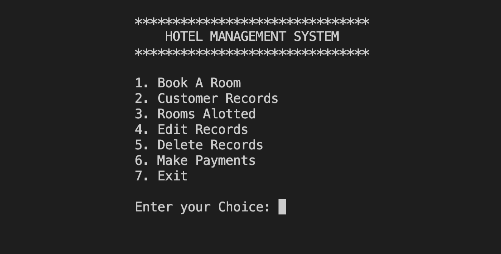

Personal Website (this one), March 2021
Github RepositoryProgramming language: HTML, CSS
Other languages/softwares used: Git
Fun Fact: I taught kids how to make their own websites, before I even made mine.
Biggest Challenge: Evenly aligning images with text.
Krabby Patty Flipping Game (unfinished), July 2021 - March 2022
Github RepositoryProgramming language: C++
Other languages/softwares used: SFML 2.0, Git
Fun Fact: Most of the assets, like the game map and the krabby patties, I drew using Adobe Illustrator. I also animated the Squidward sprite in the main menu hardcoding each sprite from the spritesheet. There was probably definitely a better way to do this.
Biggest Challenge: Managing and organizing the clicks between a raw patty, a perfect patty, and a burnt patty. For awhile, it was difficult to get the sprite to change its texture after a certain amount of time on the grill.
Hotel Management System, March 2021 
Github RepositoryProgramming Language: C++
Other languages/software used: Git
Fun Fact: A lot of the names used for debugging and testing were from my favorite film, Almost Famous.
Biggest Challenge: Managing and organizing header and cpp files, as this was my first time doing OOP on my own. Also, making the text look somewhat nice on the terminal.
Sims 4 Cheats Mobile App, January 2021
Github RepositoryProgramming language: Swift
Other languages/software used: Xcode, Git
Fun Fact: I gave up on making this app more than 3 times. I first tried developing it back in 2017, but I got stuck trying to understand Xcode's UI. Four years later, I successfully developed the app in one week.
Biggest Challenge: Passing data backwards in the Career and Skills cheats scenes to the Bookmark scene. I wanted users to be able to keep their bookmarked cheats; I wanted the app to remember old data.
C-Style Board Game, December 2020
Github RepositoryProgramming language: C
Other languages/software used: Git
Fun Fact: This was a school assignment for my Intro to Programming class. One of the hardest things I ever made because I was new to game logic.
Biggest Challenge: Printing the board. I had a difficult time understanding that you could store the characters for the project inside a 2D array given the correct conditions. Then just print everything once all if statements are passed.